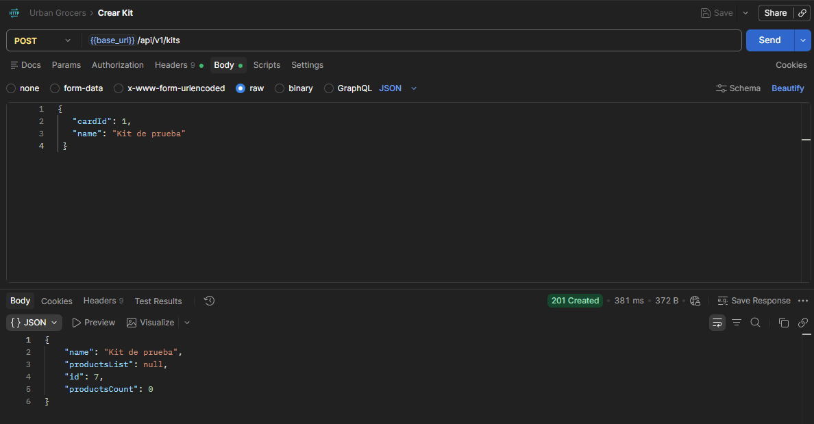
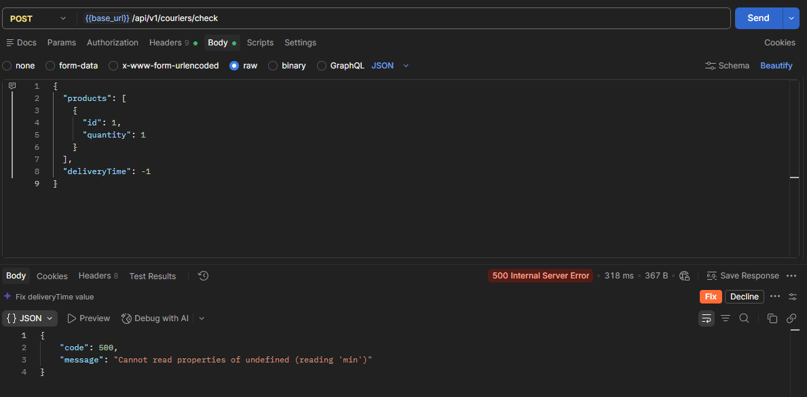
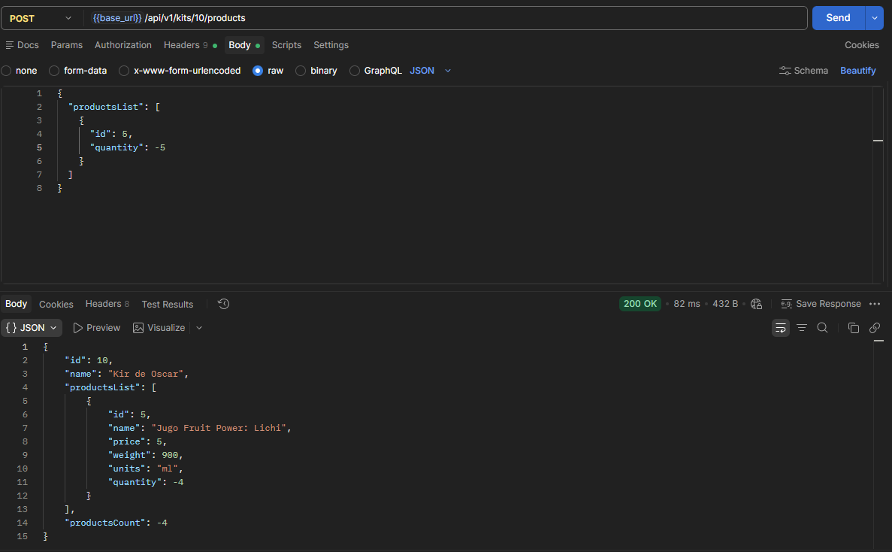

01 · CONTEXTO
Qué se probó
Urban Grocers expone una API para trabajar con kits, productos, pedidos y servicios de entrega. El objetivo del proyecto fue validar el comportamiento de distintos endpoints mediante solicitudes HTTP y comprobar tanto respuestas exitosas como escenarios negativos.
Las pruebas se ejecutaron en Postman, revisando método, endpoint, headers, body, código de estado y contenido de la respuesta.
02 · ESTRATEGIA
Cómo diseñé las pruebas
Escenarios positivos
Validé operaciones correctas con datos válidos, como agregar productos existentes a un kit y comprobar la actualización de su contenido.
Escenarios negativos
Envié entradas fuera de las reglas esperadas para comprobar que la API rechazara los datos y manejara el error de forma controlada.
Valores límite
Probé valores fuera de rango, como tiempos de entrega negativos, para detectar fallas de validación en los servicios.
Validación de respuestas
Comparé el código HTTP y el contenido del body con el comportamiento esperado para identificar inconsistencias del backend.
03 · HALLAZGOS
Defectos relevantes
Tiempo de entrega negativo provoca error interno
Al enviar deliveryTime: -1 al servicio de verificación de
mensajería, la API respondió con 500 Internal Server Error
en lugar de manejar la entrada inválida mediante una respuesta controlada.
Cantidad negativa aceptada por la API
Al agregar un producto con cantidad negativa a un kit, el backend respondió
200 OK y persistió valores negativos en quantity
y productsCount.
04 · RESULTADO
Qué demuestra el proyecto
El proyecto muestra mi capacidad para construir solicitudes HTTP, trabajar con datos JSON, validar códigos de respuesta y detectar problemas de validación que no siempre se reflejan únicamente en un código de error.
También permitió practicar diseño de pruebas positivas y negativas, valores límite y análisis del comportamiento real de un backend frente a entradas no válidas.
05 · EVIDENCIAS
Solicitudes y respuestas
Las siguientes capturas muestran un flujo válido y dos defectos detectados durante la ejecución de pruebas de API en Postman.


